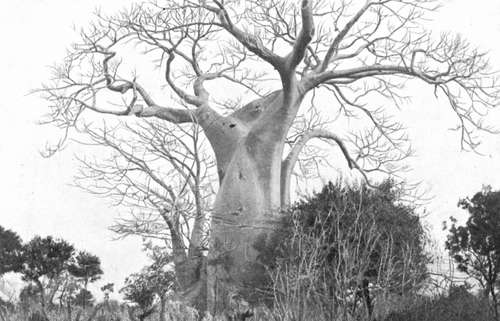

Memories Of Big Game Hunting. Part 2
Description
This section is from the book "Wild Life In Central Africa", by Denis D. Lyell. Also available from Amazon: Wild Life in Central Africa.
Memories Of Big Game Hunting. Part 2
While living at Mlanje in 1911 some natives came and told me that a lion had killed a bushpig in some thick grass on the slope of a hill. I went off, and, after a walk of five miles or so, came to the place. The grass was not only thick, but it was over 10ft. high. I asked the natives to spread out and come in with me, but they refused, saying this was a very fierce lion. I knew it was foolish going into such a place without the backing of another gun or two, but I was keen to get a shot, so in I went. I had not gone twenty yards when there was a series of very loud grunts and growls, and the thick grass began to break. I was so enveloped that I did not know at first whether the lion was coming on or bolting, so I held my rifle ready and waited. He went past me, and I could not see a hair, although I saw the tops of the grass bending before him.
I then went out of the grass into a small patch of open ground, which was part of a native garden. The natives then pelted the grass with stones and lumps of mud, and the lion shifted several times, but refused to face the open. After this had gone on for about an hour, an old man, who was sitting on a rise some distance off, shouted to me that he could see the lion's head, so I ran over, and, after following the direction he pointed, I saw it too. I sat down, and missed the first shot; but, at the second, the head seemed to topple over, and I thought I had got him ; but I was mistaken, for soon after we saw him get into some thick cover. In passing into this cover he did not show, and we only saw the grass and bushes swaying as he passed. It was now late in the afternoon, so I decided to get home and return with a friend next day. However, nothing more came of it, and I cannot say whether I hit him or not. Certainly, if I did so, it was not a good hit. A lion's head at a distance, enveloped in thick, dry grass of the same colour, is not a satisfactory target.
One night at Mzazas I sat up for some lions that had been coming round, but, instead of coming to a fat pig I had tied up for them, they spent the night in chewing up some roan reim (thongs made of roan hide) I had stretched along some trees. This was fixed at about eight feet from the ground, and they tore it down with their paws, and then ate a lot of it.
The bird life in the Luangwa River was most interesting, and the shrill cries of the ospreys were often heard as they perched on some dead tree overhanging the river. The monkeys, too, used to chatter and cry in the early mornings, and late in the afternoons as they came to drink. Many beautiful kingfishers of several varieties could be seen, and the glint of their wings in the strong sunlight was like the flash of jewels. Geese, ducks, and waders were numerous, and I noticed many terns of a small species. Green pigeons, parrots, guineafowls, partridges, quail, and doves helped to fill the pot at times, and marabout storks, as well as storks and herons of other varieties, were abundant. One very pretty black and white coloured stork is known, I believe, as the saddle bill stork, from the formation of a saddle shaped plate on the posterior part of his peak.
When game was killed and left in the open the vultures would be the first to see it, and then the marabouts would follow. It is marvellous how the vultures can see meat at such a distance, for when one shoots a beast none may be visible. Then in half an hour one will notice some dark specks away in the blue, and these will get lower and lower in diminishing circles until they develop into these carrion feeders. But if it is properly covered, the vultures fail to see it, as I have proved on many occasions.
It is useless covering the game and leaving big patches of crimson blood lying near. Sand or earth should be thrown over such marks. My belief is that the vultures do not notice the game as quickly as they do a fair-sized patch of red blood, and it is this that first catches their vision, as they wheel far off in the heavens. When the sun went down, as it often did in the dry hot season in a mass of gorgeous colours, the hyaenas would wake up and begin to wander about. They must find their staple diet of dry bones a rather unsatisfying meal, so when a lot of meat falls in their way they make up for lost time. They will eat anything, but, indeed, many of the natives are quite as bad, and I have seen them relish meat that was positively moving with maggots. But it does not seem to do them much harm.
A robust negro will put away a good 10lb. of meat in an evening, and probably fill up the vacant spaces with ufa porridge and sweet potatoes as well, and yet he will appear quite fit next morning, and ready to repeat the dose. Their digestive organs must be wonderful in their working mechanism, and Nature has been kind to them in this respect.
Crocodiles were very plentiful in the Luangwa, and on two occasions they left the water at night and took game I had left on a sandbank. I shot a good many, and then they got very cunning, and it took good stalking to get within range at times. More than half of those hit got into the water, and doubtless died soon afterwards of their wounds, or were probably eaten by their fellows before they had time to die, for I believe crocodiles are quite capable of cannibalism. One day a cow went into the river to drink and was seized by a crocodile, which was frightened off by the herd boy. However, as its udder had been dreadfully torn, I shot it to put it out of its misery.
When the river was low I used, instead of using an old dugout canoe, to cross the river where the water was about up to one's waist. I was returning one day with two men who were carrying an impala ram I had shot, and we had got to the river when the boy who was carrying the cartridge bag stayed behind. The men with the impala and myself had crossed the river at the ford, and were going along a path parallel with the river, when we heard a yell, which seemed to come from the direction of the ford. I got the men to lay down the buck, and we all returned to see what had happened. On getting near we shouted for the boy, but no answer was returned, so I had a very good idea what had occurred. I did not fancy sending the two men to the other bank, or to cross again myself, and so, as my house was only about a mile away, I went there and got the dugout, and returned up the river until we came to the spot. Behind a stone we found the cloth of the missing boy and my cartridge-bag, so the history of the tragedy was plain. He had, on reaching the river, thrown off his cloth and the bag and gone in to bathe, and one of the loathsome crocodiles had got him.
Baobab Tree In Nyasaland
Continue to:
- prev: Chapter VII. Memories Of Big Game Hunting
- Table of Contents
- next: Memories Of Big Game Hunting. Part 3